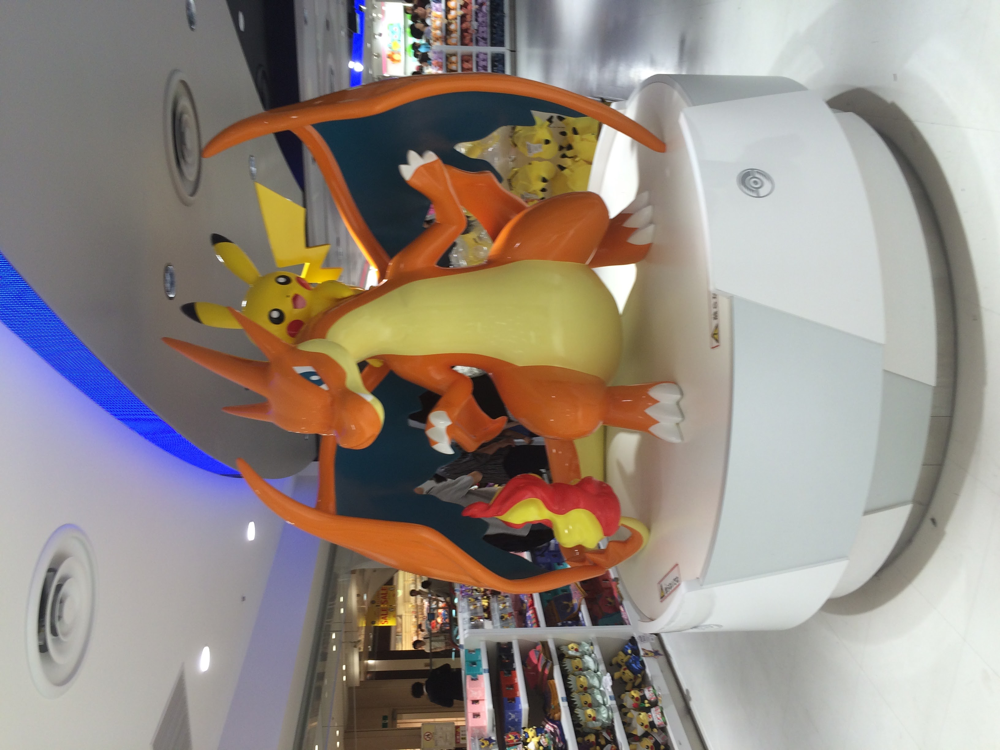

My Time in Japan
Home
Temples
Festivals
Food
Contact
From 2010 to 2013 I lived in Japan.
I enjoyed traveling and eating the delicious food there! You can read about some of my experiences on these pages!
The current date & time in Tokyo is:
The current weather in Tokyo is:
Ready to plan your own trip?
Narita International Airport
Japan Rail Pass
Hyperdia Train Timetables
Japan Bus Online
Japan National Tourism Organization
UNESCO World Heritage Sites - Japan
Cherry Blossom Forecast
Mt. Fuji Climbing
Contact Me!
If you have any questions or want to talk about Japan, leave a message here:

Name
Have you ever been to Japan?
Yes
No
Message